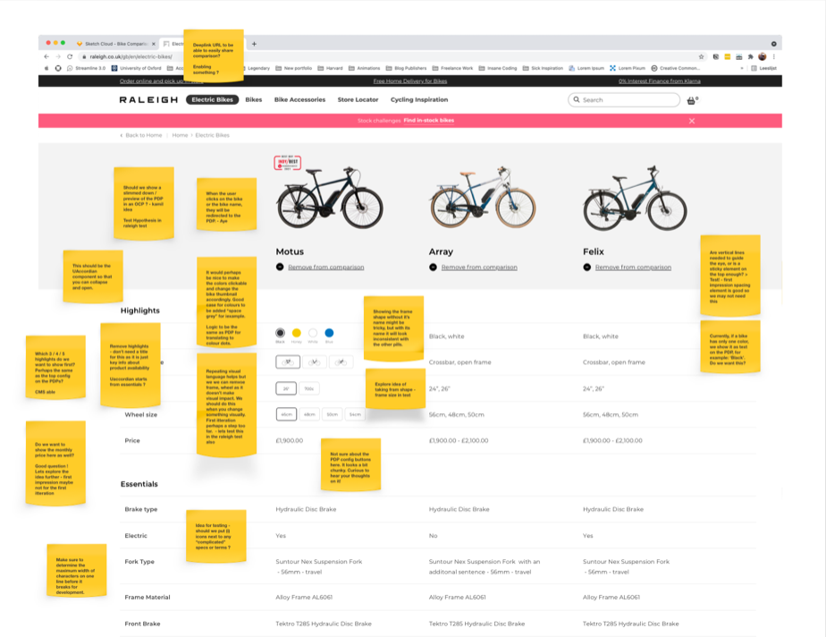
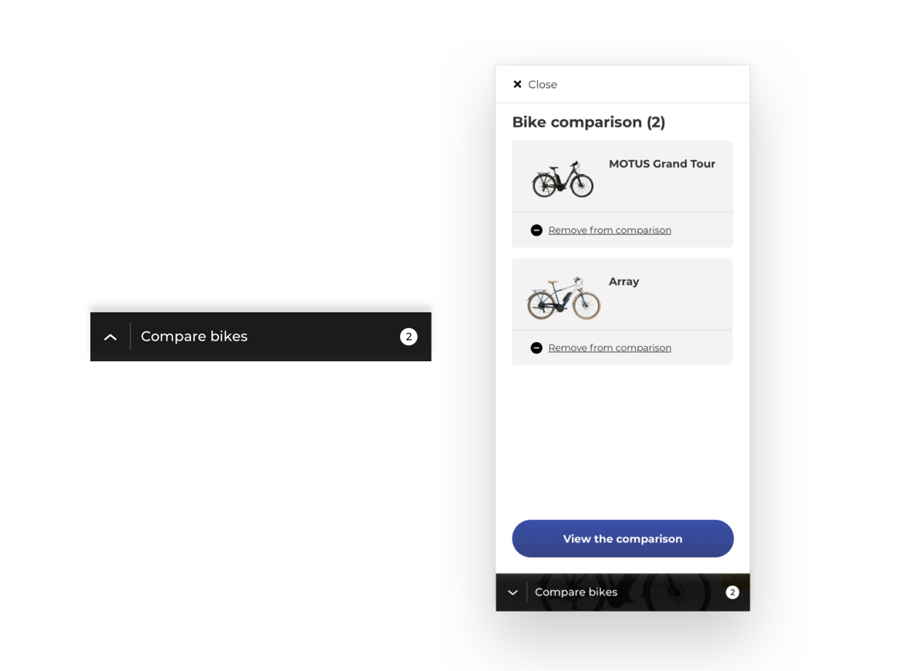
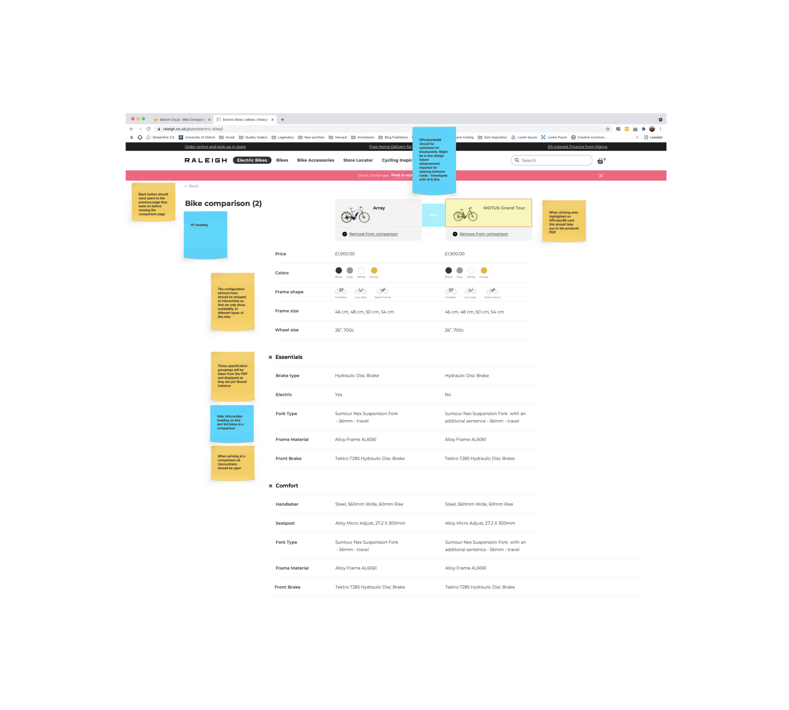
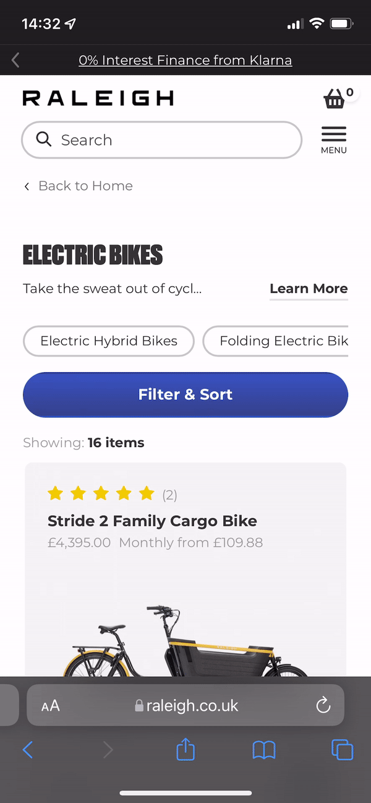
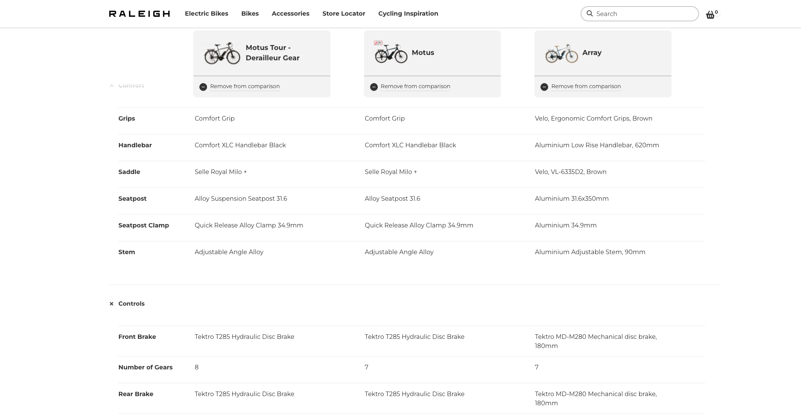
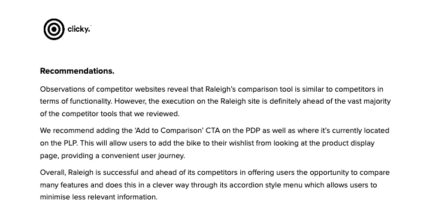

Bike comparison tool
Designing a bike comparison tool suitable for a range of brand styles.
My role:
Design lead, UX Research, UX Design, UI Design
Team:
Chris Constandse & FE Developer
Overview
The ability to compare products that are similar helps shoppers make educated decisions on their purchases. When a user is looking at bicycles online and can't decide between models they want to be able to compare models so they can make a more informed buying decision.
Outcome: Launched with Raleigh, then adopted across other brands on the platform after stakeholders asked for it directly. Independently reviewed by Raleigh's research agency, Clicky.

Research
Methods:
Cross industry competitive analysis, Analytics, Card sorting, User testing, Contextual review of academic research.
Key Insights
- Don't allow for too many items for comparison
- Information consistency is key when comparing.
- Give users control over what is important to them.
- Simplify the experience for mobile.
Prototyping solutions
Due to the nature of our scalable design system once we had completed our research and knew the problems we had to address we knew we already had most of the components we needed. This means we reduce complexity and reuse what we have already by not creating anything custom unless it is required. We only needed to create one new component which was the pull up in which the products which were being compared would live.

Process
The biggest challenge we faced was with making the comparison function and display in the most user friendly way on mobile. After we had put together our initial prototypes and after multiple iterations we were ready to test. We were going to launch the feature with Raleigh, one of our core brands from the UK. After testing with our stakeholders at Raleigh we were ready to make some minor changes and launch the feature.

Solution
By addressing each of the needs identified in our research process we delivered a comprehensive comparison tool for our users.
1. Don't allow for too many items in comparison.
What we found in our research is that having too many bikes for comparison could be cognitively overloading. I think we all know the feeling that too much choice can often be a difficult thing when it comes to making a purchase. For this reason we choose to limit the number of bikes in the comparison to 3 initially pending further user testing and research. When the user puts in their first bike the pull up opens with a message informing them they can compare a maximum of 3 bikes.

2. Information consistency is key when comparing
One of the most key elements of a successful comparison is clear and accurate information consistency. Making sure products have the same taxonomy in regards to specifications is vital. On launching the feature we communicated to our brands to make sure there was no missing specification information as during our research we discovered that having blank spots or inconsistencies can actually be detrimental to the experience.

3. Give users control over what is important to them
Bike specifications can be quite complicated and more than anything quite vast. It was important that we offered our users an ability to only see the information relevant to them. For this reason when showing the specification in comparison we used accordions. This means that if someone is only looking to compare battery capacity on electric bikes they can close other irrelevant accordions. Thus delivering some empowerment to the user so they control what they compare.

4. Simplify the experience of mobile
As most of Raleighs users are viewing mobile devices it was imperative that we made the mobile comparison as user friendly as possible. During our research in comparison of other comparison tools we often found this was their major downside. So with this crux in mind we spent extensive time in the execution making sure to deliver a more scalable solution no matter the screen size. No matter where the user is in the comparison they can still see what spec belongs to which bike in their comparison.

Measuring Success
Happy Stakeholders
When we successfully launched the tool with Raleigh our stakeholders were extremely pleased with this feature delivery that was of extreme importance. This lead to the other brands on our platform asking for it to be implemented. This is where I find a bit of magic in this scalable set up we have.
Analytics
We have implemented tracking on the comparison tool and are hoping to see our results across several dimensions soon.
Independent review by research agency
Perhaps the most satisfying reward so far has been a report delivered by Raleigh's independent research agency Clicky. This was their summary:

Take aways
- Design systems have high business impact for more than just designers. The flexibility of our system played a huge role in giving us freedom to explore the problem longer and then being able to implement the design fast.
- Comparing on mobile is hard, but not impossible. Our research into other comparison tools across industries showed clearly that the mobile experience was lacking for users across the board. We took this into the heart of our approach making sure to deliver as smooth an experience as possible.
- Involve people all along development journey. By taking more initiative to get people more involved with the design and development it led to additional insights that informed the design process.
- Many opportunities for further development. As this was the first iteration of the comparison tool I look forward with excitement as we seek to improve it.
Try out the comparison tool for yourself and let me know what you think!